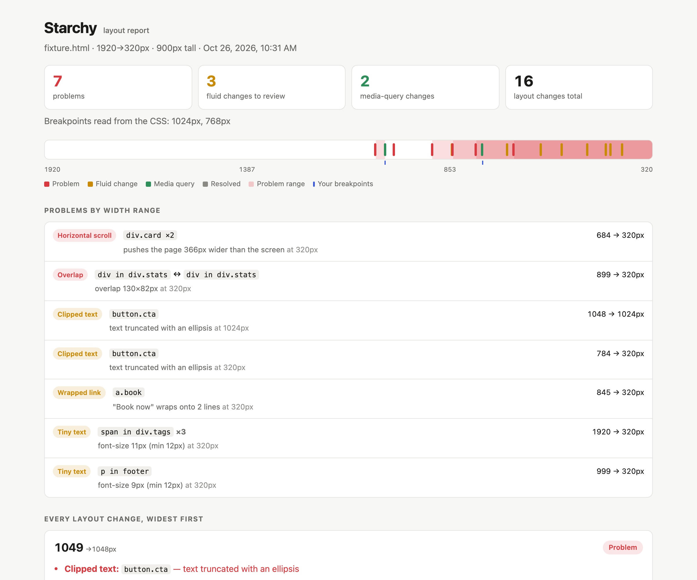

Find the layout bugs between your breakpoints.
starchy sweeps your page across every width from 1920px to 320px, finds the exact pixel where the layout changes, and flags the changes that are bugs.
npx starchy your-site.com
Output
What a run looks like
Screenshots at 375, 768 and 1440 miss the bug that only shows at 912px. starchy checks the whole range and gives you the exact pixel, the element, and whether the change was on purpose.
$ npx starchy test/fixture.html starchy file:///…/test/fixture.html widths 1920→320px, heights 900px media-query breakpoints found: 1024, 768 height 900px 1049px problem 1024px breakpoint 1000px problem 900px problem 847px fluid 768px breakpoint 685px problem 614px fluid … 16 layout changes · 7 problems (9 elements) · 11.4s report → starchy-report/report.html

Checks
What counts as a problem
Every problem comes with the width range where it happens and the element that causes it. Identical problems on repeated elements are grouped into one row.
Horizontal scroll
The page is wider than the screen. starchy names the element that causes it: it hides each candidate and checks if the scroll width shrinks.
Overlap
In-flow sibling elements overlap each other.
Escapes container
An element sticks out of its parent's box.
Hidden in a range
An element hides in a middle range of widths but shows on both sides, such as a header button that only disappears on tablets.
Small-range layout
A layout holds for 5px or fewer between two changes. This is usually a media-query off-by-one, such as min-width: 769px next to max-width: 767px.
Text overflows
A long word, URL or email address runs out of its box.
Covered text
A badge, ribbon or label sits on another element's text, or a fixed top bar covers text that scrolling can't reveal.
Text cut off
Text runs past the bottom of a box with a fixed height and overflow: hidden.
Hidden submit button
A form is visible, but its submit button is hidden at that width.
Stretched image
A photo is drawn at a different shape than it has, with no object-fit.
Clipped text
Text is cut off by overflow: hidden.
Wrapped link
A link or button label of 5 words or fewer breaks onto 2 or more lines.
Tiny text
Text is smaller than --min-font, 12px by default.
How it works
Sweep, bisect, classify
starchy drives headless Chromium through Playwright. It compares how elements sit in rows and boxes, so font rendering noise cannot make it flaky.
Fingerprint
Load at 1920px. Record how each container's children sit in rows, e.g.
3+3+1, what is visible, and any problems.Sweep
Step down 8px at a time, and stop on both sides of every
@mediabreakpoint. When the fingerprint changes, binary-search to the exact pixel.Capture
Take before and after screenshots with the changed elements outlined.
Classify
Match the width against the
@mediabreakpoints in your CSS.Report
Write
report.htmland afingerprint.jsonto compare against later.
@media breakpoint. Expected.CI
Run it on every pull request
Run starchy once on a known-good build and commit its fingerprint.json. On every pull request, compare against it.
name: layout on: pull_request jobs: starchy: runs-on: ubuntu-latest steps: - uses: actions/checkout@v4 - uses: actions/setup-node@v4 with: { node-version: 20 } - run: npx playwright install --with-deps chromium - run: >- npx starchy https://staging.example.com --baseline .starchy/fingerprint.json --fail-on new - uses: actions/upload-artifact@v4 if: always() with: { name: starchy-report, path: starchy-report }
--fail-on newexits 1 on a new problem or a new layout change.--fail-on problemsexits 1 on any problem.- The report lists new problems, fixed problems, and layout changes that appeared or disappeared.
- Pages match by URL. One page compares against a one-page baseline even when the URLs differ, so staging can compare with local.
- Check several URLs or a whole
sitemap.xmlin one report. Problems shared by many pages show once. - Pages behind a login: pass a Playwright storage state with
--storage-state.
Reference
Options
starchy <url-or-file>... [options]. A bare domain gets https://, and localhost gets http://.
| Flag | Default | Description |
|---|---|---|
| --max / --min | 1920 / 320 | Width range to sweep |
| --step | 8 | Coarse step before bisecting. Lower is slower but more thorough. |
| --heights | 900 | Comma-separated viewport heights, each swept separately |
| --dpr | 1 | Device pixel ratio (affects images and hairlines, not layout) |
| --min-font | 12 | Smallest acceptable text size in px |
| --ignore | Selectors to skip, e.g. .carousel,.ad-slot | |
| --settle | 0 | Extra ms to wait after each resize, for JS-driven layouts |
| --out | starchy-report | Output folder |
| --baseline | An earlier fingerprint.json to compare against | |
| --fail-on | none | problems or new makes starchy exit 1 |
| --no-screenshots | Faster runs, report without images | |
| --problem-shots | Add a screenshot of each problem at its first failing width, with the element outlined | |
| --stress | Double the text in repeated items (lists, cards, grids) to find layouts that only hold with short content | |
| --storage-state | A Playwright storage state file, for pages behind a login |
Sweep your page.
npx starchy your-site.com